무선설비기능사 (2008-10-05 기출문제)
1과목: 임의 구분
1. 다음 중 입력 파형의 기준을 다른 기준 레벨로 바꾸어 고정시키는 회로는?
- 펄스 회로
- 클램핑회로
- 클리퍼 회로
- 리미트 회로
(정답률: 알수없음)

2. 다용 가산기(adder) 회로에서 출력 Vo는 몇 [V] 인가?
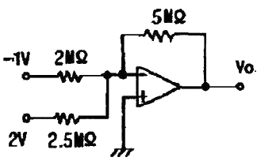
- 1[V]
- -1[V]
- 1.5[V]
- -1.5[V]
(정답률: 알수없음)
3. 어떤 펄스 회로에서 상승시간은 펄스 높이의 몇 [%]에서 몇 [%]까지 상승하는데 걸리는 시간인가?
- 0[%]에서 90[%]까지
- 10[%]에서 90[%]까지
- 10[%]에서 100[%]까지
- 0[%]에서 100[%]까지
(정답률: 알수없음)
4. 평판 콘덴서에 2[C]의 전기량을 줄 때 두 판 사이의 전위가 10[V]이면 이 콘덴서의 정전용량은 몇 [F] 인가?
- 0.1[F]
- 0.2[F]
- 0.5[F]
- 1.5[F]
(정답률: 알수없음)
5. 트랜지스터의 컬렉터 역포화 전류 Ico가 주위온도의 변화로 2[μA]에서 102[μA]로 증가 되었을 때 컬렉터 전류 Ic의 변화가 0.5[mA]였다면 이 회로의 안정도 계수는 얼마인가?
- 1.2
- 3.6
- 5
- 6.3
(정답률: 50%)
6. 증폭기의 전압 증폭도가 1000 일 때 이것을 [dB]로 나타내면 몇 [dB] 인가?
- 20[dB]
- 30[dB]
- 40[dB]
- 60[dB]
(정답률: 알수없음)
7. 다음 중 FET에 대한 설명으로 적합하지 않은 것은?
- BJT보다 이득대역폭 적어 작다.
- BJT보다 잡음특성이 우수하다.
- BJT는 3층 구조이나 FET는 4층 구조이다.
- BJT보다 온도변화에 따른 안정성이 높다.
(정답률: 알수없음)
8. 다음 중 펀치 오프 전압을 가장 잘 설명한 것은?
- 게이트 전류가 0 일 때의 드레인 – 소스 간의 전압
- 드레인 전류가 0 일 때의 게이트 – 드레인 간의 전압
- 드레인 전류가 0 일 때의 게이트 – 소스 간의 전압
- 드레인 전류가 0 일 때의 드레인 – 소스 간의 전압
(정답률: 알수없음)
9. 무궤환시 전압이득이 150인 증폭기에서 궤환율 β = 0.01의 부궤환을 걸었을 때 전압이득은?
- 9
- 30
- 60
- 150
(정답률: 알수없음)
10. LC 발진 등 통조 발진회로에서 주로 사용되는 증폭기의 동작 방식은?
- A급
- AB급
- B급
- C급
(정답률: 알수없음)
11. 다음 중 집적회로(IC)의 특징에 대한 설명으로 가장 적합하지 않은 것은?
- 경제적이다.
- 소형이며 성능이 우수하다.
- 고전력용으로 많이 사용된다.
- 높은 신뢰도를 얻을 수 있다.
(정답률: 알수없음)
12. 주파수 변조회로에서 신호(변조) 주파수가 1[kHz], 최대 주파수 편이가 6[kHz]일 때 변조지수는 얼마인가?
- 0.16
- 6
- 8
- 16
(정답률: 알수없음)
13. 이상적인 연산증폭기에서 동상 신호 제거비(CMRR)는 얼마인가?
- 0
- 1
- 1000
- 무한대
(정답률: 알수없음)
14. 저항 4[Ω]과 6[Ω]을 병렬로 접속하고 여기에 2.6[Ω]의 저항을 직렬로 접속하였을 때 합성저항은 몇 [Ω] 인가?
- 10[Ω]
- 5[Ω]
- 2.5[Ω]
- 1[Ω]
(정답률: 알수없음)
15. 10[Ω]의 저항에 1[A]의 전류를 1초 동안 흘렸을 때 발열량은 몇 [cal] 인가?
- 1[cal]
- 1.2[cal]
- 2.4[cal]
- 10[cal]
(정답률: 알수없음)
16. 다음 중 USB에 대한 설명으로 옳지 않은 것은?
- 병렬 포트의 원리와 동일하다.
- 플러그 앤 플레어 방식을 지원한다.
- 하나의 주 컨트롤러에는 최대 127대의 주변장치를 연결할 수 있다.
- 컴퓨터와 주변기기를 연결하는데 쓰이는 입·출력 표준의 하나이다.
(정답률: 알수없음)
17. 16비트를 1워드로 사용하는 컴퓨터에서 OP-코드를 6비트로 하면 최대 몇 가지 명령어를 수행할 수 있는가?
- 16
- 64
- 128
- 256
(정답률: 알수없음)
18. CPU에서 메모리나 입·출력 장치의 벤지를 지정해 주는 것은?
- 제어 버스
- 데이터 버스
- 어드레스 버스
- 명령 레지스터
(정답률: 80%)
19. 다음 중 프로그램 작성 단계에서 어떠한 데이터를 어떻게 입력하여, 처리 결과를 출력할 것인지를 결정하는 단계는?
- 순서도 작성 단계
- 문제 분석 단계
- 프로그램 번역 단계
- 입·출력 설계 단계
(정답률: 알수없음)
20. 다음 bit에 관한 설명 중 틀린 것은?
- 10진수의 현 자리수를 말한다.
- 2진수를 나타내는 둘 중의 하나이다.
- 정보량을 표현하는 것 중 최소단위이다.
- binary digit의 약자이다.
(정답률: 알수없음)
2과목: 임의 구분
21. 드보르간의 정리에서
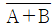
와 같은 논리식은?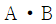
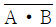
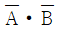
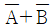
(정답률: 알수없음)
22. 두 입력 A, B가 모두 1 일 때만 출력 Y가 1이 되는 논리회로는?
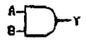
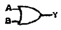
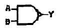
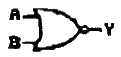
(정답률: 73%)
23. 보조기억장치가 데이터에 접근하는 방식 중 자기테이프 장치에서와 같이 필요한 데이터를 판독 또는 기록할 때 파일의 처음에서부터 순차적으로 접근하는 방식은?
- DAM
- SAM
- CAM
- 일괄처리
(정답률: 알수없음)
24. 다음 중 ROM에 대한 설명으로 옳지 않은 것은?
- 일반적으로 윈도 프로그램을 저장한다.
- MASK ROM은 저장된 내용을 지울 수 없다.
- 전원이 끊어져도 저장된 내용은 지워지지 않는다.
- UVEPROM은 자외선을 이용해 저장된 내용을 지울 수 있다.
(정답률: 알수없음)
25. 컴퓨터의 특징과 그에 대한 설명으로 옳지 않은 것은?
- 자동 처리 : 프로그램 내장 방식에 의한 순서적 처리가 가능하다.
- 대용량성 : 대량의 자료를 저장하며 저장된 내용의 즉시 재생이 가능하다.
- 신속, 정확성 : 처리에 소요되는 시간이 다른 기계와 비교할 수 없을 정도로 신속, 정확하다.
- 동시 사용, 호환성 : 다른 장비와 결합하여 사용할 수 있다.
(정답률: 알수없음)
26. 슈퍼헤테로다인 수신기에서 1000[kHz]의 전파를 수신하고 있을 때 국부 발진 주파수가 1500[kHz]라면 중간 주파수는 얼마인가?
- 455[kHz]
- 500[kHz]
- 1455[kHz]
- 1500[kHz]
(정답률: 알수없음)
27. 다음 중 전파가 반사 또는 굴절 등에 의해 서로 다른 경로를 통하여 수신 안테나에 도달하기 때문에 위상차에 따른 수신 전계강도가 변화하여 발생하는 페이딩은?
- 간섭성 페이딩
- 편파성 페이딩
- 도약성 페이딩
- 흡수성 페이딩
(정답률: 알수없음)
28. 다음 중 델린저 현상에 대한 설명으로 적합하지 않은 것은?
- 주로 태양이 없는 야간에 발생한다.
- 주로 저위도 지방에서 발생한다.
- 돌발적으로 발생하여 수 십분 간 계속된다.
- 주로 1.5~20[MHz] 정도의 단파통신에 영향을 준다.
(정답률: 알수없음)
29. 수신기의 고주파 증폭기의 이득이 30[dB], 주파수 변환 이득이 –5[dB], 중간주파 이득이 80[dB], 저주파 이득이 35[dB] 일 때 이 수신기의 종합 이득은? (단, 검파손실 등 기타 손실은 없다.)
- 60[dB]
- 80[dB]
- 120[dB]
- 140[dB]
(정답률: 알수없음)
30. 어떤 레이더 장치에서 3000[m]의 거리에 있는 목표물에 대하여 전파를 발사했을 때 몇 초 후에 반사파를 받을 수 있는가?
- 10[μs]
- 20[μs]
- 30[μs]
- 40[μs]
(정답률: 알수없음)
31. 다음 중 단파 원거리통신에 적합한 이유로 가장 타당한 것은?
- 주로 직접파만 전파되기 때문에
- 전리층에서 반사되기 때믄에
- 주로 구름을 따라 전파되기 때문에
- 주로 지표면에 따라 전파되기 때문에
(정답률: 알수없음)
32. 주파수 변조(FM) 수신기에서 저역통과 여파기의 일종으로 낮은 주파수 성분을 잘 통과시키고 높은 주파수 성분을 감쇠하는 회로는?
- 체배회로
- 증폭회로
- 발진회로
- 디 엠퍼시스회로
(정답률: 알수없음)
33. 다음 중 단파통신의 특징에 대한 설명으로 적합하지 않은 것은?
- 불감지대가 생긴다.
- 소전력으로 원거리통신이 가능하다.
- 거리에 관계 없이 전계 감도가 일정하다.
- 지향성 통신이 가능하다.
(정답률: 알수없음)
34. 수신기를 재조정하지 않고 얼마나 긴 시간동안 만족스러운 출력을 낼 수 있는가 하는 능력을 무엇이라 하는가?
- 선택도
- 충실도
- 안정도
- 잡음지수
(정답률: 알수없음)
35. 다음 중 전리층 통신에서 최고사용주파수(MUF)가 10[MHz]일 때 최적운용주파수(FOT)로 가장 적합한 것은?
- 1[MHz]
- 5[MHz]
- 8.5[MHz]
- 10[MHz]
(정답률: 알수없음)
36. 정격부하일 때 출력전압이 250[V], 무부하일 때 출력전압이 275[V] 인 전원설비의 전압변동률은 몇 [%] 인가?
- 5[%]
- 10[%]
- 15[%]
- 20[%]
(정답률: 60%)
37. 다음 중 DSB와 비교한 SSB 통신기의 단점으로 적합하지 않은 것은?
- 가격이 비싸다.
- 송신기의 소비전력이 크다.
- 통신기의 회로구성이 복잡하다.
- 높은 주파수 안정도를 필요로 한다.
(정답률: 알수없음)
38. 무선 송신기의 피변조파를 오실로스코프로 관측한 바 다음과 같은 도형(A : B = 3 : 1)이 스코프 상에 나타났다. 변조도는 몇 [%] 인가?
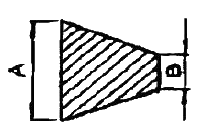
- 25[%]
- 33[%]
- 50[%]
- 75[%]
(정답률: 알수없음)
39. 다음 중 위성통신에 대한 설명으로 적합하지 않은 것은?
- 주로 초단파를 이용한다.
- 대용량의 통신 및 다원 접속이 가능하다.
- 지리적 여건에 관계없이 회선설정이 용이하다.
- 보안유지를 위한 특별한 암호장치가 필요하다.
(정답률: 알수없음)
40. 다음 중 안테나의 손실 저항이 아닌 것은?
- 도체저항
- 접지저항
- 복사저항
- 코로나손실
(정답률: 60%)
3과목: 임의 구분
41. 다음 중 FM 수신기를 AM 수신기와 비교했을 때 다른 점은?
- 고주파 정폭회로가 사용된다.
- 제2 국부 발진기를 사용한다.
- 슈퍼 헤테로다인 검파방식을 이용한다.
- 진폭 제한회로, 스켈치 회로가 사용된다.
(정답률: 알수없음)
42. 수신기의 선택도 측정에 필요치 않는 것은?
- 레벨미터
- 저주파 발진기
- 의사 안테나
- 표준신호 발생기
(정답률: 알수없음)
43. 다음 중 레이더의 최대탐지거리를 크게 하는 방법으로 적합하지 않은 것은?
- 송신출력을 크게 한다.
- 수신기의 감도를 높인다.
- 안테나의 높이를 가능한 한 높인다.
- 안테나의 개구면적을 작게 한다.
(정답률: 알수없음)
44. 다음 중 무선 송신기의 스퓨리어스 복사 감소방법으로 적합하지 않은 것은?
- 공진회로의 Q를 낮춘다.
- 전력 증폭단을 푸시풀로 접속한다.
- 급전선에 트랩(trap)을 설치한다.
- 전력증폭단과 공중선회로에 π형 임피던스 매칭회로를 삽입한다.
(정답률: 알수없음)
45. 다음 중 도피관에 창을 설치하는 목적으로 가장 적합한 것은?
- 진행파를 방해한다.
- 반사파를 방해한다.
- 슬롯 안테나로 동작한다.
- 도피관의 임피던스를 변환시킨다.
(정답률: 알수없음)
46. 수신설비가 충족하여야 할 조건으로 적합하지 않은 것은?
- 선택도가 클 것
- 내부잡음이 적정할 것
- 수신주파수는 운용범위 이내일 것
- 감도는 낮은 신호압력에서도 양호할 것
(정답률: 알수없음)
47. 다음 중 형식검정을 받야아 하는 무선설비의 기기에 해당되지 않는 것은?
- 선박국용 무선방위측정기
- 선박에 설치하는 경보자동수신기
- 위성비상위치지시용 무선표지설비의 기기
- 외국으로부터 도입하는 항공기에 설치된 무선기기
(정답률: 알수없음)
48. 무선국에서 사용하는 주파수마다의 중심주파수로 정의되는 것은?
- 기준주파수
- 지정주파수
- 특성주파수
- 필요주파수
(정답률: 알수없음)
49. 다음 중 보안도가 가장 낮은 통신방법은?
- 등기우편
- 유선전화
- 무선통신
- 전령통신
(정답률: 알수없음)
50. R3E, H3E, J3E 전파형식을 사용하는 모든 무선국의 무선설비의 점유주파수대폭의 허용치로 가장 적합한 것은?
- 1 kHz
- 3 kHz
- 5 kHz
- 10 kHz
(정답률: 알수없음)
51. 다음 중 통신보안의 1차적 책임은?
- 기관청
- 통신이용자
- 전문기안자
- 전문통제권자
(정답률: 알수없음)
52. “측정한 주파수의 용도를 정하는 것”으로 정의되는 것은?
- 주파수 분배
- 주파수 지정
- 주파수 할당
- 주파수 재배치
(정답률: 알수없음)
53. 의료용 전파응용설비의 전계강도 허용치는 30m 거리에 몇 [μV/m] 이하이어야 하는가?
- 10[μV/m]
- 50[μV/m]
- 100[μV/m]
- 200[μV/m]
(정답률: 알수없음)
54. 다음 중 무선국을 개설할 수 있는 자는?
- 외국의 법인
- 외국의 단체
- 국내 법인의 임원
- 외국정보의 대표자
(정답률: 알수없음)
55. 다음 중 방송통신위원회가 전파자원의 공평하고 효율적인 이용을 촉진하기 위하여 필요한 경우 시행하여야 하는 사항에 속하지 않는 것은?
- 주파수 분배의 변경
- 주파수의 공동 사용
- 새로운 기술방식으로의 전환
- 이용중인 주파수의 이용효율 향상
(정답률: 알수없음)
56. 다음 중 용어의 사용목적으로 가장 적합한 것은?
- 통신내용을 간략하게 하기 위하여
- 통신내용을 정확하게 전달하기 위하여
- 통신내용을 누설을 방지하기 위하여
- 통신내용을 강청하지 못하게 하기 위하여
(정답률: 알수없음)
57. 다음 중 “압축파대 수신기에 의해 수신이 가능하도록 반송파를 일정한 레벨로 송출하는 전파”로 정의되는 것은?
- 전반송파
- 억압반송파
- 저감반송파
- 디지털반송파
(정답률: 알수없음)
58. 다음 ( ) 안에 들어갈 내용으로 가장 알맞은 것은?
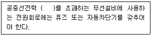
- 5와트
- 10와트
- 30와트
- 50와트
(정답률: 알수없음)
59. 535[MHz] 초과 16⑤.5[MHz] 이하 주파수대 방송국의 주파수 허용 편차는?
- 10[Hz]
- 20[Hz]
- 50[Hz]
- 100[Hz]
(정답률: 알수없음)
60. 다음 중 공중선 전력의 표시로 적합하지 않은 것은?
- 평균전력(PY)
- 반송파전력(PZ)
- 실효복사전력(EP)
- 첨두포락선전력(PX)
(정답률: 알수없음)